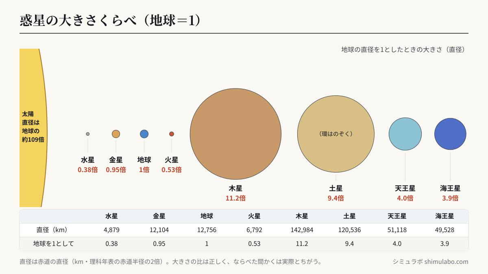
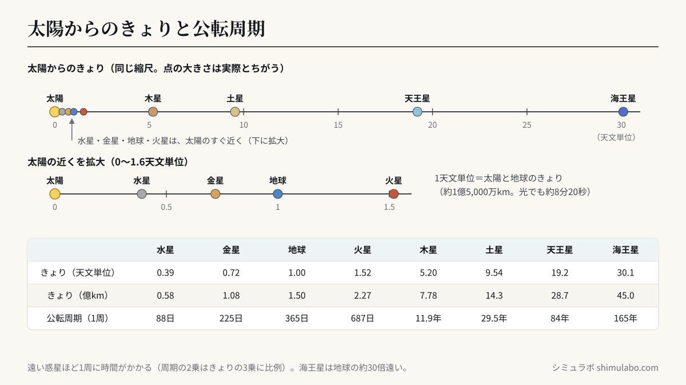

内側ほど速いのはなぜ？
太陽に近い惑星ほど重力を強く受け、速く回らないと落ちてしまいます。だから水星の1年は88日、海王星は165年。実際の公転周期の比に合わせて回しています（距離は見やすく圧縮）。






図はタップすると大きく表示されます。資料やSNSに使うときは、出典「シミュラボ」とページのURLを添えてください。
ケプラーの第3法則：T² ∝ a³
惑星の公転周期 T の2乗は、太陽からの距離 a の3乗に比例します。距離が4倍なら周期は8倍。本シミュレーターは実際の周期の比でそれぞれの惑星を回しています。
| 惑星 | 距離（天文単位） | 公転周期 |
|---|---|---|
| 水星 | 0.39 | 88日 |
| 金星 | 0.72 | 225日 |
| 地球 | 1.00 | 365日 |
| 火星 | 1.52 | 687日 |
| 木星 | 5.20 | 11.9年 |
| 土星 | 9.54 | 29.5年 |
| 天王星 | 19.2 | 84年 |
| 海王星 | 30.1 | 165年 |
本当の縮尺だとどうなる？
距離を正確にすると、太陽をピンポン玉（直径4cm）にしたとき地球は約4.3m先の砂粒、海王星は約130m先になります。画面に収めるために距離を圧縮しているのはそのためです。1天文単位は約1億5,000万km。光でも8分20秒かかる距離です。
よくある質問
- 距離は正確？
- 見やすさ優先で圧縮しています。周期の比は実際に近づけています。
- データは送信されますか？
- いいえ。すべてブラウザ内で動きます。
- 内側ほど速いのはなぜ？
- 太陽に近いほど重力が強いため、落ちずに回り続けるには速い速度が必要です。水星は秒速約47km、海王星は秒速約5.4kmで公転しています。
- 惑星が一直線に並ぶことはある？
- 周期がバラバラなので、8惑星が完全に一直線になることは事実上ありません。「惑星直列」と呼ばれる現象も、空の一定範囲に集まる程度のものです。